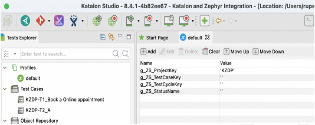
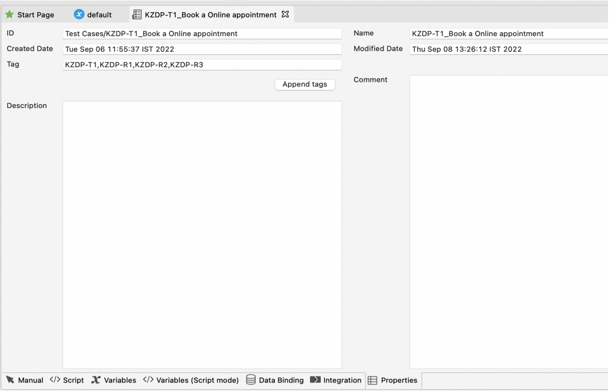
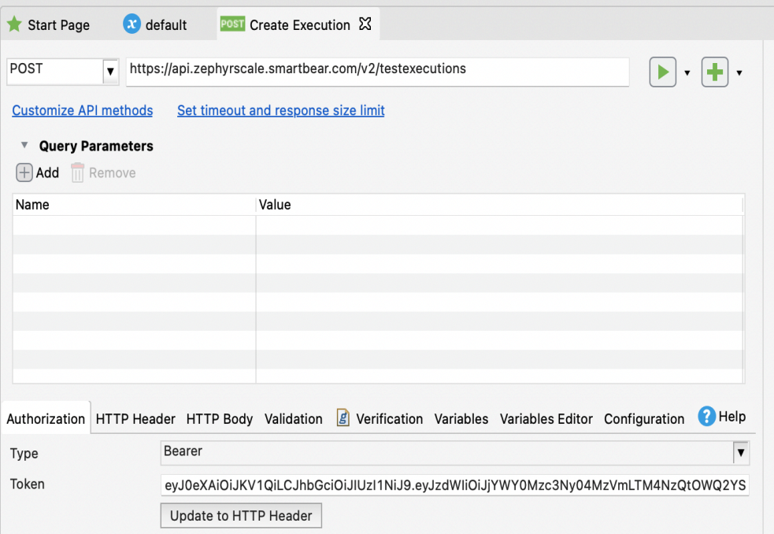
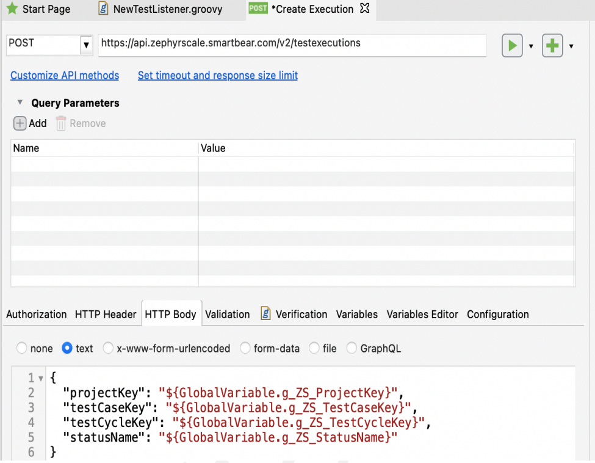
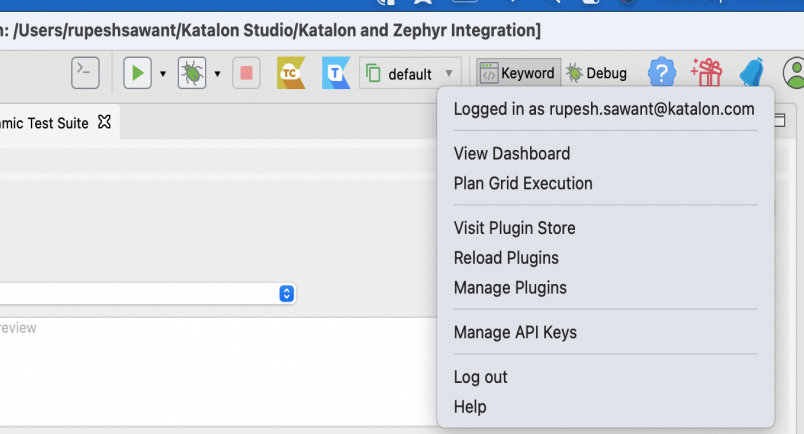
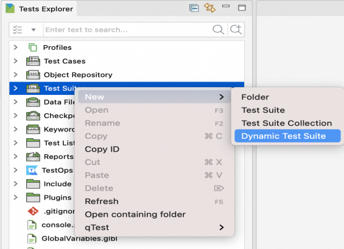
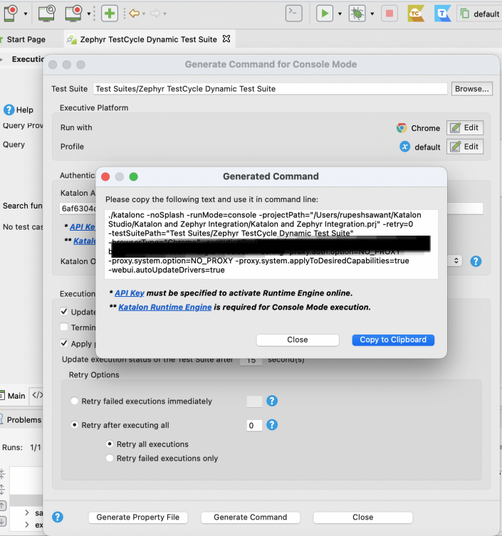
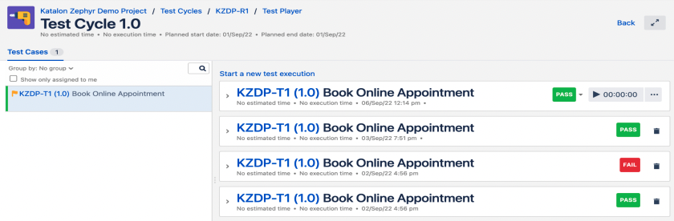

Setup Katalon project
- Global Variables setup
Create the following global variable in your package which will be used in API calls for pushing execution results to Zephyr cloud in Jira from Katalon after execution of test cases.
- Create Test Case and tagScript the test case and give name to test case with prefix as Test Case Key from Zephyr Scale then an underscore followed by Test case name, for example: <<TestCase Key>>_<<Test case name as per your choice>>
Also, you need to tag the test case with linked Test Cycle Keys from Zephyr scale as below.
- Create Web Service Request
Under the Object repository add a new web service request for API Create test execution -This API will be used to push test results by creating a new execution record for each Test case after execution in Katalon.
In API you need to provide an end point, set authorization with bearer token generated in the step Generating API Access Tokens above, update that to HTTP Header and the HTTP Body with parameterized global variables which will be replaced with actual value in runtime. - Create TestListenerCreate a new test listener with following methods and code given below. This will call the Execution API after each Test case gets executed and push results to Zephyr Scale.
<< default import statements will be here>> class NewTestListener { /** * Executes after every test case ends. * @param testCaseContext related information of the executed test case. */ @AfterTestCase def sampleAfterTestCase(TestCaseContext testCaseContext) { //Get Test Case Key from test case name TestCase testCase = findTestCase(testCaseContext.getTestCaseId()) GlobalVariable.g_ZS_TestCaseKey=testCase.getName().split("_")[0] //Set Zephyr Status if (testCaseContext.getTestCaseStatus()=="PASSED") GlobalVariable.g_ZS_StatusName="Pass" else if (testCaseContext.getTestCaseStatus()=="FAILED") GlobalVariable.g_ZS_StatusName="Fail" else GlobalVariable.g_ZS_StatusName="Not Executed" //Call API to Push Result to Zephyr by creating Test case execution WS.sendRequest(findTestObject('Create Execution')) } } - Install Basic Search for Dynamic Test Suite Plugin.
You can install Basic Search For Dynamic Test Suite by login into the Katalon Store and reload the plugin in Katalon Studio.
- Create Dynamic Test Suite and Generate Command for Console Mode
- In Test Explorer panel, right-click at the Test Suites folder > New > Dynamic Test Suite to create a Dynamic Test Suite.
- Select Generate Command icon near Run icon and select Test Suite and other details.
- Execute Dynamic Test Suite using Console mode command.This command can be configured in Katalon TestOps or in CI tool for triggering execution or can be run on cmd using Katalon Runtime Engine.
You need to append two arguments with the Test Cycle Key value which you want to execute:./katalonc -noSplash -runMode=console -projectPath="/Users/rupeshsawant/Katalon Studio/Katalon and Zephyr Integration/Katalon and Zephyr Integration.prj" -retry=0 -testSuitePath="Test Suites/Zephyr TestCycle Dynamic Test Suite" -browserType="Chrome" -executionProfile="default" -apiKey="<<Your APi Key>>" -orgID=<<Your Org Id>> --config -proxy.auth.option=NO_PROXY -proxy.system.option=NO_PROXY -proxy.system.applyToDesiredCapabilities=true -webui.autoUpdateDrivers=true-testSuiteQuery="tag=(<<Your Test Cycle Key)>>)": this argument will be used for filtering test cases linked to test cycle for execution in dynamic test suite.-g_ZS_TestCycleKey="<<Your Test Cycle Key)>>": this argument will be used for setting global variable value to selected test cycle which will be required in API calls.
The command will be updated as follows:./katalonc -noSplash -runMode=console -projectPath="/Users/rupeshsawant/Katalon Studio/Katalon and Zephyr Integration/Katalon and Zephyr Integration.prj" -retry=0 -testSuitePath="Test Suites/Zephyr TestCycle Dynamic Test Suite" -browserType="Chrome" -executionProfile="default" -apiKey="<<Your APi Key>>" -orgID=<<Your Org Id>> --config -proxy.auth.option=NO_PROXY -proxy.system.option=NO_PROXY -proxy.system.applyToDesiredCapabilities=true -webui.autoUpdateDrivers=true -testSuiteQuery="tag=(<<Your Test Cycle Key)>>)" -g_ZS_TestCycleKey="<<Your Test Cycle Key)>>" - Check test results in Jira Zephyr ScaleResults will be updated in Jira Zephyr scale in respective test cycle and test case with new execution record.